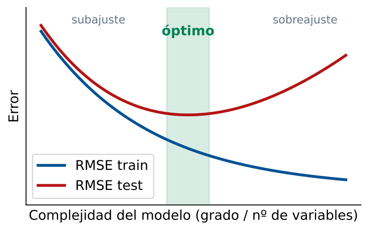

Comparación de Modelos y Validación
Selección del Mejor Modelo Predictivo
Módulo 5 — Regresión y Análisis de Datos
Matemáticas 2 — Clase 26
Cátedra de Matemáticas 2
Ingeniería en Logística
Clase 26 — Integradora
Contenidos de la Clase
- Objetivos de Aprendizaje
- El Problema de Selección de Modelos
- Protocolo Completo de Comparación
- Criterios de Selección: Resumen Ejecutivo
- Dataset: Demanda de Distribución (24 semanas)
- Resultados de la Comparación
- Diagnóstico de Sobreajuste
- MATLAB: Estructura de Comparación
- MATLAB: Ajustar y Evaluar cada Modelo
- MATLAB: Visualización y Decisión Final
- AIC y BIC: Criterios de Información
- Cuándo Cambiar de Modelo: Monitoreo Continuo
- Tabla de Decisión Integrada
- Resumen: Flujo Completo de Selección
- Punto de Decisión
- Tarea para la Clase 27
- Referencias
Objetivos de Aprendizaje
Al finalizar esta clase el estudiante será capaz de:
- Enunciar el protocolo completo de comparación de modelos.
- Aplicar la división train/test para evaluar modelos alternativos.
- Utilizar \(R^2_\text{adj}\), RMSE y MAPE como criterios de selección.
- Detectar sobreajuste comparando rendimiento en train vs test.
- Justificar la elección del modelo con argumentos cuantitativos y operativos.
- Decidir con qué modelo planificar y en qué condiciones cambiarlo.
Integración del Módulo 5
Clase 21: construir modelos. Clase 22: interpretar coeficientes.
Clase 23: múltiples variables. Clase 24: medir errores.
Clase 25: modelos cuadráticos.
Clase 26: elegir el mejor modelo con rigor.
El Problema de Selección de Modelos
Situación típica
Tienes varios modelos candidatos para pronosticar la demanda:
- M1: regresión lineal simple (distancia)
- M2: regresión cuadrática (mes)
- M3: regresión múltiple (dist + peso + paradas)
- M4: promedio móvil 4 semanas
El gerente pregunta: ¿Con cuál operamos?
No puedes elegir basándote solo en \(R^2\):
- \(R^2\) siempre sube al agregar variables o grado
- No mide rendimiento en datos nuevos
- Puede ser artificialmente alto por sobreajuste
La pregunta correcta
¿Cuál modelo predice mejor los datos que aún no ha visto?
Eso es lo que importa operativamente.
Respuesta
Usar datos de prueba separados (test set) para evaluar el rendimiento real de cada modelo.
Protocolo Completo de Comparación
1. Recolectar
datos
2. Dividir
train/test
3. Ajustar
modelos
4. Calcular
RMSE test
¿Sobreajuste?
5. Elegir
mejor modelo
6. Validar
con expertos
7. Desplegar
y monitorear
Regla de división
Con pocos datos (\(n < 100\)): 70% train / 30% test.
Con muchos datos (\(n > 1000\)): 80% train / 20% test.
En logística temporal: los datos de prueba deben ser los más recientes.
Criterios de Selección: Resumen Ejecutivo
| Criterio | Fórmula | Cuándo usarlo | Señal de alarma |
|---|
| \(R^2_\text{adj}\) | \(1-(1-R^2)\frac{n-1}{n-k-1}\) | Comparar modelos con distinto \(k\) en el mismo dataset | Baja al agregar una variable |
| RMSE\(_\text{test}\) | \(\sqrt{\frac{1}{n_t}\sum e_i^2}\) | Criterio principal de selección | Mucho mayor que RMSE\(_\text{train}\) |
| MAPE | \(\frac{100}{n}\sum\frac{|e_i|}{|y_i|}\) | Comunicar precisión al equipo operativo | Mayor que el criterio del negocio |
| Parsimonia | Grado/variables mínimas | Desempate entre modelos similares | Modelo más complejo sin mejora real |
Jerarquía de criterios
1° RMSE\(_\text{test}\) (rendimiento real)
2° \(R^2_\text{adj}\) (complejidad penalizada)
3° MAPE (comunicación)
4° Parsimonia (desempate)
Dataset: Demanda de Distribución (24 semanas)
Una empresa registra 24 semanas de demanda de envíos.
Se tienen las siguientes variables:
- \(t\): número de semana (1–24)
- \(x_1\): distancia media de los envíos (km)
- \(x_2\): número de clientes activos
- \(y\): demanda total (toneladas)
Train: semanas 1–17 (70%)
Test: sem. 18–24 (30%)
Modelos candidatos:
- M1: tendencia lineal \(\hat y = \beta_0 + \beta_1 t\)
- M2: tendencia cuadrática \(\hat y = \beta_0 + \beta_1 t + \beta_2 t^2\)
- M3: regresión múltiple \(\hat y = \beta_0 + \beta_1 x_1 + \beta_2 x_2\)
- M4: promedio móvil 4 semanas (referencia)
Resultados de la Comparación
Valores de referencia de una corrida del script (los datos se simulan con randn; con otra versión de MATLAB o semilla, los números pueden variar levemente).
| Modelo | \(R^2_\text{train}\) | \(R^2_\text{adj}\) | RMSE\(_\text{train}\) | RMSE\(_\text{test}\) | MAPE\(_\text{test}\) |
|---|
| M1 | Lineal (\(t\)) | 0.871 | 0.864 | 8.2 | 10.4 | 7.8% |
| M2 | Cuadrático (\(t^2\)) | 0.923 | 0.912 | 6.3 | 7.1 | 5.2% |
| M3 | Múltiple (\(x_1,x_2\)) | 0.958 | 0.952 | 4.7 | 5.8 | 4.1% |
| M4 | Prom. móvil 4 | — | — | 11.3 | 13.2 | 9.6% |
Análisis
- M3 gana en todas las métricas: menor RMSE\(_\text{test}\) (5.8) y MAPE\(_\text{test}\) (4.1%).
- M2 es mejor que M1: el patrón cuadrático agrega valor real (\(R^2_\text{adj}\) sube de 0.864 a 0.912).
- M4 (promedio móvil) es el peor: no captura la tendencia de crecimiento.
- Sobreajuste en M3: RMSE\(_\text{test}\)/RMSE\(_\text{train}\) = 5.8/4.7 = 1.23. Aceptable (< 1.5).
Decisión: M3 (regresión múltiple)
Menor RMSE en test, MAPE del 4.1% cumple criterio <5% para planificación de producción.
Diagnóstico de Sobreajuste
Cómo detectar sobreajuste en la tabla de resultados:
| Situación | RMSE\(_\text{train}\) | RMSE\(_\text{test}\) | Diagnóstico |
|---|
| Sin sobreajuste | 5.0 | 5.8 | Ratio 1.16: OK |
| Sobreajuste leve | 3.0 | 6.5 | Ratio 2.17: cuidado |
| Sobreajuste grave | 1.0 | 12.0 | Ratio 12: inaceptable |
| Subajuste | 15.0 | 14.8 | El modelo es demasiado simple |
Regla práctica
Si RMSE\(_\text{test}\) / RMSE\(_\text{train}\) > 2: hay sobreajuste significativo.
Acción: reducir el número de predictores o el grado del polinomio.

El error de prueba tiene forma de U: el mínimo marca la complejidad óptima
MATLAB: Estructura de Comparación
% Datos: 24 semanas
rng(42)
t = (1:24)';
x1 = 100 + 5*t + 8*randn(24,1); % distancia media (km)
x2 = 50 + 2*t + 5*randn(24,1); % clientes activos
y = 50 + 1.5*t + 0.02*x1 + 0.8*x2 + 6*randn(24,1);
% Division train (70%) / test (30%)
n_tr = round(0.7*24); % 17 semanas
idx_tr = 1:n_tr;
idx_te = (n_tr+1):24;
y_tr = y(idx_tr); y_te = y(idx_te);
% Funcion auxiliar: calcular metricas
rmse = @(yr,yp) sqrt(mean((yr-yp).^2));
mape = @(yr,yp) mean(abs((yr-yp)./yr))*100;
R2 = @(yr,yp) 1 - sum((yr-yp).^2)/sum((yr-mean(yr)).^2);
% Almacenar resultados
resultados = struct();
MATLAB: Ajustar y Evaluar cada Modelo
% M1: Lineal en t
p1 = polyfit(t(idx_tr), y_tr, 1);
yp1_tr = polyval(p1, t(idx_tr));
yp1_te = polyval(p1, t(idx_te));
% M2: Cuadratico en t
p2 = polyfit(t(idx_tr), y_tr, 2);
yp2_tr = polyval(p2, t(idx_tr));
yp2_te = polyval(p2, t(idx_te));
% M3: Multiple (x1, x2)
X_tr = [ones(n_tr,1), x1(idx_tr), x2(idx_tr)];
X_te = [ones(24-n_tr,1), x1(idx_te), x2(idx_te)];
b3 = X_tr \ y_tr;
yp3_tr = X_tr * b3;
yp3_te = X_te * b3;
% M4: Promedio movil 4 semanas
yp4_tr = movmean(y_tr, 4);
yp4_te = repmat(mean(y_tr(end-3:end)), length(idx_te), 1);
% Tabla de resultados
modelos = {'M1 Lineal','M2 Cuadratico','M3 Multiple','M4 Prom.Movil'};
YP_tr = {yp1_tr, yp2_tr, yp3_tr, yp4_tr};
YP_te = {yp1_te, yp2_te, yp3_te, yp4_te};
fprintf('%-18s %-12s %-14s %-12s\n','Modelo','RMSE_train','RMSE_test','MAPE_test')
fprintf('%s\n', repmat('-',56,1))
for m = 1:4
fprintf('%-18s %-12.4f %-14.4f %-12.2f%%\n', modelos{m}, ...
rmse(y_tr, YP_tr{m}), rmse(y_te, YP_te{m}), mape(y_te, YP_te{m}))
end
MATLAB: Visualización y Decisión Final
% Grafico comparativo y seleccion del modelo
figure('Name','Clase 26 - Comparacion de Modelos','Position',[50 50 950 430]);
subplot(1,2,1)
plot(t, y, 'ko-','LineWidth',1.5,'DisplayName','Real'); hold on
plot(t(idx_tr), yp1_tr,'b--','LineWidth',1.5,'DisplayName','M1 Lineal')
plot(t(idx_tr), yp2_tr,'g-', 'LineWidth',1.5,'DisplayName','M2 Cuadratico')
plot(t(idx_tr), yp3_tr,'r-', 'LineWidth',1.5,'DisplayName','M3 Multiple')
plot(t(idx_te), yp1_te,'b--','LineWidth',1.5,'HandleVisibility','off')
plot(t(idx_te), yp2_te,'g-', 'LineWidth',1.5,'HandleVisibility','off')
plot(t(idx_te), yp3_te,'r-', 'LineWidth',1.5,'HandleVisibility','off')
xline(n_tr+0.5,'k:','LineWidth',2,'DisplayName','Train|Test')
legend('Location','northwest','FontSize',8); grid on
xlabel('Semana'); ylabel('Demanda (ton)')
title('Comparacion de Modelos');
subplot(1,2,2)
rmse_vals = [rmse(y_tr,yp1_tr) rmse(y_te,yp1_te);
rmse(y_tr,yp2_tr) rmse(y_te,yp2_te);
rmse(y_tr,yp3_tr) rmse(y_te,yp3_te);
rmse(y_tr,yp4_tr) rmse(y_te,yp4_te)];
b = bar(rmse_vals);
b(1).FaceColor = [0 0.45 0.74];
b(2).FaceColor = [0.85 0.33 0.10];
set(gca,'XTickLabel',{'M1','M2','M3','M4'})
legend({'RMSE train','RMSE test'},'Location','northeast')
ylabel('RMSE (ton)'); title('RMSE: Train vs Test'); grid on
AIC y BIC: Criterios de Información
Cuando RMSE\(_\text{test}\) y \(R^2_\text{adj}\) dan señales contradictorias, se pueden usar criterios de información:
AIC — Criterio de Información de Akaike
\[ \text{AIC} = n\ln\!\left(\frac{\text{SCR}}{n}\right) + 2(k+1) \]
Penaliza por el número de parámetros. Menor es mejor.
BIC — Criterio de Información Bayesiano
\[ \text{BIC} = n\ln\!\left(\frac{\text{SCR}}{n}\right) + (k+1)\ln(n) \]
Penaliza más fuerte que AIC. Favorece modelos más simples.
Menor es mejor.
Uso práctico
AIC y BIC son útiles cuando no se puede separar datos de prueba (datasets pequeños). En logística con datos abundantes, preferir RMSE\(_\text{test}\).
Cuándo Cambiar de Modelo: Monitoreo Continuo
Un modelo elegido hoy puede volverse obsoleto
Señales de que el modelo debe actualizarse:
- RMSE\(_\text{test}\) empieza a subir mes a mes
- Los residuos recientes muestran patrón sistemático
- Cambio estructural en el negocio (nuevo cliente grande, apertura de nueva ruta)
- Los coeficientes cambian significativamente al reajustar
Regla de reentrenamiento
Reajustar el modelo cuando el RMSE de las últimas 4 semanas sea un 20% mayor que el RMSE de validación original. Incluir los datos nuevos en el entrenamiento.
Tabla de Decisión Integrada
| Observación | Diagnóstico | Acción | Modelo a usar |
|---|
| Residuos sin patrón, RMSE\(_\text{test}\) bajo | Modelo adecuado | Desplegar y monitorear | El modelo actual |
| Residuos en U, RMSE\(_\text{test}\) alto | Curvatura no capturada | Agregar término cuadrático | Modelo cuadrático |
| RMSE\(_\text{test}\) \(\gg\) RMSE\(_\text{train}\) | Sobreajuste | Reducir grado o variables | Modelo más simple |
| RMSE\(_\text{test}\) alto en ambos modelos | Datos con mucho ruido | Agregar más variables, más datos | Modelo múltiple |
| RMSE\(_\text{test}\) sube con el tiempo | Cambio estructural | Reentrenar con datos recientes | Modelo actualizado |
Resumen: Flujo Completo de Selección
- Graficar los datos. ¿Hay tendencia lineal, curva, estacional?
- Dividir los datos: 70% train, 30% test (los más recientes en test).
- Ajustar todos los modelos candidatos solo con train.
- Calcular RMSE\(_\text{test}\), MAPE\(_\text{test}\) y \(R^2_\text{adj}\) para cada uno.
- Verificar sobreajuste: RMSE\(_\text{test}\) / RMSE\(_\text{train}\) < 2.
- Seleccionar el modelo con menor RMSE\(_\text{test}\) que no muestre sobreajuste.
- Validar que los coeficientes tengan sentido operativo.
- Desplegar y monitorear el RMSE periódicamente.
Principio de parsimonia (navaja de Occam)
Si dos modelos tienen RMSE\(_\text{test}\) similar (diferencia < 10%), elegir el más simple. Es más fácil de mantener, explicar y actualizar.
Punto de Decisión
Pregunta de Cierre
El modelo cuadrático M2 tiene RMSE\(_\text{test}\)=7.1 y MAPE=5.2%. El modelo múltiple M3 tiene RMSE\(_\text{test}\)=5.8 y MAPE=4.1%. Pero M3 requiere medir distancia y clientes cada semana (costo adicional de $200/mes). M2 solo necesita el número de semana (gratis).
¿Qué modelo eliges? ¿El ahorro en precisión justifica el costo de recolección?
A favor de M3
RMSE 18% menor. MAPE cumple <5%. Mejor para contratos exigentes.
A favor de M2
No requiere datos adicionales. La diferencia de precisión es \(7.1-5.8=1.3\) ton por semana.
Análisis de ROI
Con M3 el IS (95%) baja \(1.645\times1.3\approx2.1\) ton. A $4/ton/semana: ahorro \(\approx 2.1\times4\times4.33\approx\$37\)/mes < $200/mes de medición. Solo por IS, M3 no se paga; se justifica si hay penalidades por error (contratos exigentes).
Tarea para la Clase 27
Lecturas
- Montgomery, Cap. 3.3: Criterios de selección de variables
- Revisar la rúbrica del Mini-caso 4 (disponible en plataforma)
Ejercicio preparatorio
Con el dataset del script
clase26_comparacion.m:
- Ejecutar los 4 modelos y reproducir la tabla de resultados.
- Calcular el ratio RMSE\(_\text{test}\)/RMSE\(_\text{train}\) para cada modelo. ¿Hay sobreajuste?
- Calcular AIC y BIC para M1, M2 y M3.
- ¿AIC y BIC coinciden con la elección por RMSE\(_\text{test}\)?
- Escribir en un párrafo (150 palabras) la justificación de tu elección de modelo.
Próxima clase 27
Mini-caso 4 — Predicción de demanda: caso integrador del Módulo 5
Referencias
- Montgomery, D.C., Peck, E.A. & Vining, G.G. (2012). Introduction to Linear Regression Analysis (5th ed.). Wiley. Cap. 3.3 (Selección de modelos), Cap. 9 (Validación de modelos).
- Hyndman, R.J. & Athanasopoulos, G. (2021). Forecasting: Principles and Practice (3rd ed.). OTexts. Cap. 5.8 (Selección de modelos). https://otexts.com/fpp3/
- Akaike, H. (1974). A New Look at the Statistical Model Identification. IEEE Transactions on Automatic Control, 19(6), 716–723.
- MATLAB Documentation.
aicbic, fitlm, stepwiselm. https://www.mathworks.com/help/econ/aicbic.html
- Material propio: Script
clase26_comparacion.m.
Matemáticas 2 — Clase 26 | Comparación y Selección de Modelos
¡Fin del Módulo 5!
Regresión y Análisis de Datos — Completado
Próximo: Módulo 6 — Temas Avanzados
contacto@mat2logistica.edu